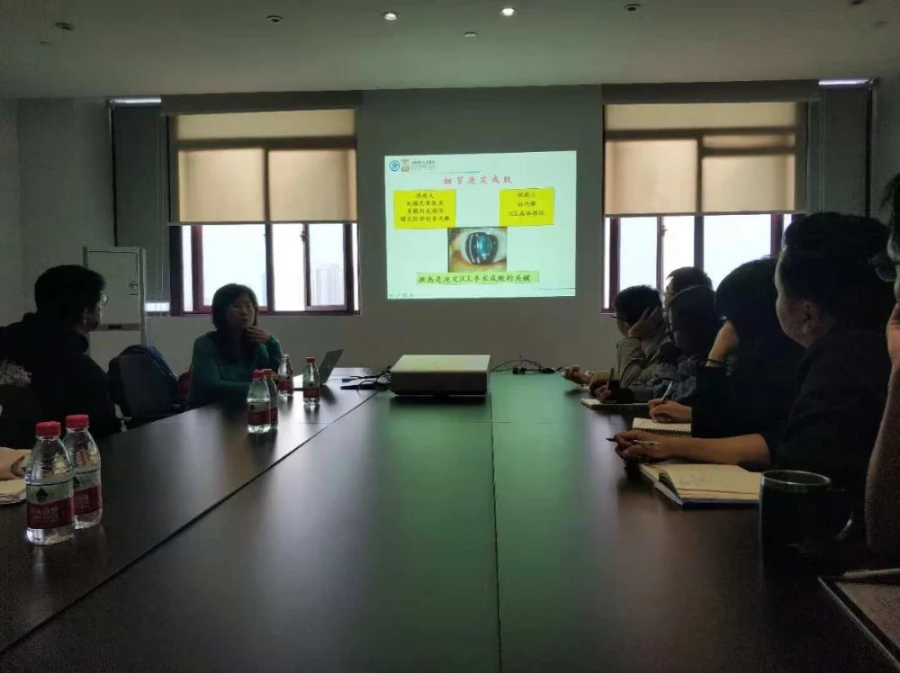
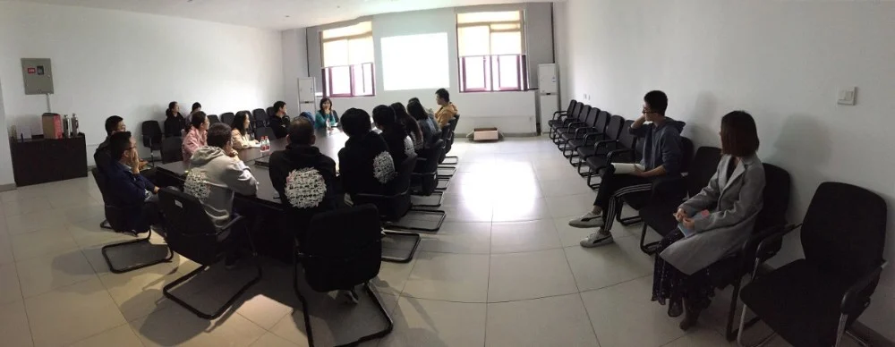

2018年1月11日下午2点，上海交通大学附属第一人民医院眼科主任医师、柯碧莲教授带上了2名研究生前来中国科学院宁波材料技术与工程研究所，在iMED中国团队作了精彩的学术报告，报告的的题目是：如何基于眼科图像分析调整眼内晶体植入术后的拱高。
柯碧莲教授是上海交通大学附属第一人民医院视光眼表科主任，中华医学会眼科学会视光学组委员，中华医学会眼科女医师协会委员，中国眼科医师协会视光分会委员，上海医学会视光学会委员，上海医学会眼科学会视光及屈光手术学组副组长，上海市浦江人才，美国 Bascom Palmer眼科中心访问学者。
柯碧莲教授从事眼科临床工作20余年，具有丰富的临床经验和手术技巧，擅长近视眼的临床诊治包括近视激光手术、眼内晶体植入术及青少年近视的多元化防控；擅长眼表疾病的临床诊治包括干眼病的治疗、角膜移植、羊膜移植、翼状胬肉及化学伤手术。作为第一负责人承担包括国家自然科学基金项目在内的省部级科研项目十余项。领衔完成有关青少年近视临床调控项目获上海市医学科学奖。近年来在国内外著名杂志发表论文40余篇，参与编写专著2部。
通过柯碧莲教授的报告，我们又一次看到了用计算机影像技术对眼科医学手术进行辅助的技术前景。ICL植入术，又叫有晶体眼人工晶体植入术，是目前国际上矫治近视最新最安全的产品之一，而供高是决定ICL手术成败的关键。目前来说，单纯使用WTW估算STS存在一定的缺陷，由于WTW和ACD均可影响拱高，所以还需要注意比较双眼ACD和WTW的测量结果。报告中还提出，拱高的影响因素除WtW，ACD以外需要纳入更多的计算因子，用外眼测量的WtW来估测沟对沟存在的误差也需要被进一步解决，除此之外图像建模也存在一定的临床研究意义，这些都有待于使用计算机智能影像技术介入进来辅助解决问题。
柯碧莲教授的报告非常的精彩，从报告中能听出柯碧莲高超的专业功力以及丰富的临床实战经验，着实令听众佩服。但一次成功的报告并不是报告人一个人的表演，报告结束后柯碧莲教授一行人与iMED中国团队的成员们对问题和前景进行了深入的交流与探讨。我们感谢柯碧莲教授一行人前来在我们团队做的报告，感谢柯碧莲教授的精彩演讲，以及一系列的友好交流，祝愿我们的合作能长长久久，更祝愿我们的有意能地久天长！

